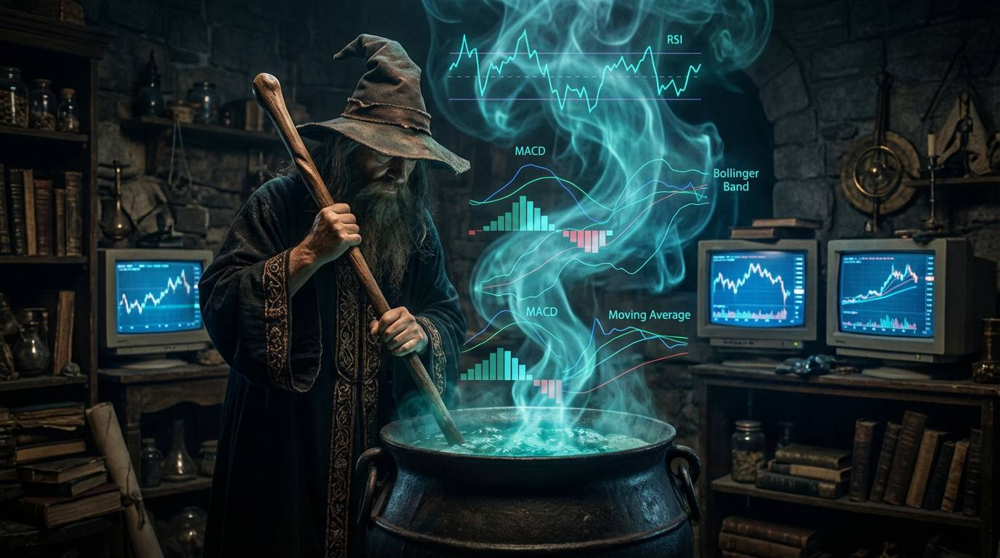

Did you know there are over 100,000 indicators on TradingView?
Yes, one hundred thousand…
And if you find the perfect combo of indicators and settings from the almost infinite choices, you'll unlock the holy grail.
Oh, wait, no, no, that's not right, is it?!
MAGIC INDICATORS

In all seriousness, we've probably all thought that at one point in our trading journey… “There must be a special combo.” 🤔
And then we realise… if there was, people with far more resources would have figured it out by now.
But there isn't.
What indicators can do though, is guide us and help us. They're a decision support tool. Not the keys to Aladdin's cave.
Your indicators should sit in one of three pillars:
- Filter: "I won't look for longs until RSI is in oversold territory."
- Trigger: "I'll take the trade once RSI pops back above 20."
- Bias shift: "Shorts only while price is under the 50-day moving average."
And just like lines, every indicator you put on your chart must have a clear purpose.
Because that chart of yours is precious real estate… and anything on it has to earn its keep.
So, following on from last week's Pepperstone webinar on key levels and market structure, we're taking the natural next step:
Understanding which indicators actually help, and which ones just add noise.
Not "this crossover means that, this indicator does this" stuff you can find anywhere… but how you find an indicator that becomes a valuable, alpha-generating decision support tool.
Not one that just looks pretty and sounds smart when you say it.
You know the drill by now.
This will be a good one.